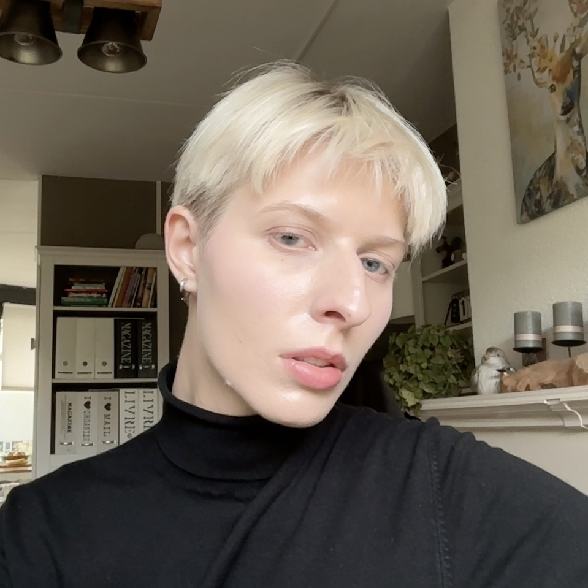

Over
Over mij
Mijn naam is Donja de Jong. Ik heb gekozen om aandacht te geven aan deze organisatie, omdat ik een persoonlijke connectie heb met een aantal van de doelen waarvoor zij zich inzetten.
Ik ben zelf een Amsterdammer die ooit thuisloos is geweest. Dit gebeurde toen ik alleen woonde met mijn vader. Er was ook een periode dat we naar de voedselbank moesten.
Zelf vind ik het ook goed dat zij zich inzetten voor Amsterdammers met psychische problemen, omdat ik directe familieleden heb die hier ook mee worstelen.
Over de Regenboog Groep
"Wij zijn er voor mensen in Amsterdam en omstreken die het moeilijk hebben. Ze worstelen met eenzaamheid, psychische problemen, een verslaving, dakloosheid, schulden en vaak met meerdere van deze problemen. Wij zijn vrijwilligers, meewerkende bezoekers, medewerkers en andere aardige Amsterdammers die samen ruimte voor hen maken, aandacht geven en een hand toe steken. Dat doen we omdat we mensen zijn net als zij. Samen vormen we De Regenboog Groep; al bijna 50 jaar mensen onder elkaar." - de Regenboog groep
Lees meer over wat de Regenboog Groep doet op hun sociale media kanalen (zie onderstaande iconen).